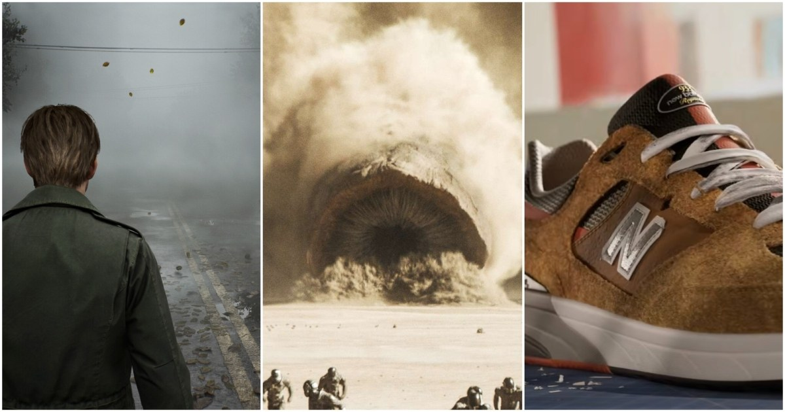

01
Blender 製作：建模、Blender工具介紹
Blender 製作：建模、Blender工具介紹。內容展示建模、Blender、Maya的作品或工具；可先看具體結果，再確認作者公開了哪些操作步驟。

Blender ★★★★☆
完整分析
技術／流程變更
本篇重點是建模、Blender、Maya（Best 3D M…sh & More）。Blender 製作：建模、Blender工具介紹。內容展示建模、Blender、Maya的作品或工具；可先看具體結果，再確認作者公開了哪些操作步驟。
Production 影響
針對建模、Blender、Maya（Best 3D M…sh & More），可拿一個現有模型試做，比較輪廓、拓樸、UV 和烘焙結果，再記錄操作與清理時間，判斷是否比原方法省工。
導入測試與限制
測試建模、Blender、Maya（Best 3D M…sh & More）時，需檢查複雜造型、細分曲面與舊檔相容性；單一示範不能保證所有資產都能得到相同品質。
BRIEF｜來源已驗證；證據深度較有限，完整分析會明確區分已知資訊與待驗證事項。